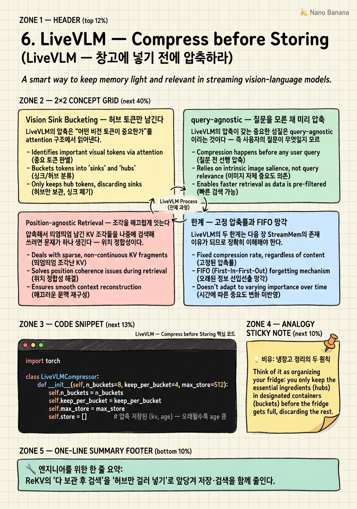

LiveVLM — Compress before Storing

🎯 학습 목표
- ReKV의 저장·검색 부담을 LiveVLM이 어떻게 앞당겨 푸는지 안다
- vision-to-vision attention으로 허브 토큰을 찾는 원리를 설명한다
- query-agnostic 사전 압축의 이점과 위험을 구분한다
- position-agnostic retrieval이 필요한 이유를 안다
- 고정 압축률과 FIFO 망각이라는 한계가 StreamMem으로 이어지는 흐름을 안다
5장 ReKV는 KV를 통째로 보관해 완전한 기억을 얻었지만, 두 가지 대가를 남겼다 — KV가 원본보다 커서 저장이 부담스럽고, 창고가 커질수록 검색이 병목이 된다. LiveVLM(arXiv 2505.15269)의 발상은 단순하다 — "창고에 넣기 전에 압축부터 하자."
ReKV가 "일단 다 넣고 나중에 검색"이라면, LiveVLM은 "넣기 전에 알맹이만 걸러 넣는다". 창고 자체가 작아지니 저장 부담도 줄고, 검색 대상도 줄어 QA 지연까지 짧아진다. 같은 병목을 한 단계 상류에서 공략하는 것이다.
핵심 질문은 "무엇이 알맹이인가"다. LiveVLM의 답은 Vision Sink Bucketing(VSB) — 다른 토큰들이 많이 쳐다보는 허브(hub) 토큰만 남긴다는 것이다. 여기에 training-free이면서 query-agnostic(질문을 모른 채 미리 압축)이라는 실용적 성질이 더해진다. 이 챕터는 VSB의 허브 선별 논리와, 그 대가로 생기는 고정 압축률·FIFO 망각이라는 한계 — 다음 장 StreamMem이 정확히 이 지점을 공략한다 — 를 짚는다.
핵심 내용
Vision Sink Bucketing — 허브 토큰만 남긴다
LiveVLM의 압축은 "어떤 비전 토큰이 중요한가"를 attention 구조에서 읽어낸다.
1장에서 attention sink를 배웠다 — 다른 토큰들의 attention이 습관적으로 몰리는 토큰. LiveVLM은 이 아이디어를 비전 토큰에 적용한다. vision-to-vision attention 점수를 보면, 어떤 비전 토큰에는 다른 많은 비전 토큰들의 참조가 집중된다. 이런 토큰은 그 장면의 정보가 모이는 허브(hub)다 — 하나만 남겨도 주변 맥락을 상당 부분 대표한다.
VSB(Vision Sink Bucketing)는 이 허브 토큰들을 선별하되, 버킷(bucket) 단위로 골라 맥락 커버리지를 최대화한다. 한 영역에서만 허브를 다 뽑으면 다른 영역 정보가 통째로 빠지므로, 버킷으로 나눠 골고루 대표를 남기는 것이다.
\[\text{hub score}(t) = \sum_{t' \neq t} \text{attn}_{\text{vision}\to\text{vision}}(t' \to t)\]
허브 점수가 높은 토큰만 저장하고 나머지는 버린다. 결과적으로 ReKV가 저장하던 KV 양이 대폭 줄어든다. "많이 참조되는 것이 중요하다"는 직관은 검색 알고리즘의 PageRank와 같은 발상 — 링크를 많이 받는 페이지가 중요하듯, attention을 많이 받는 토큰이 중요하다.
query-agnostic — 질문을 모른 채 미리 압축
LiveVLM의 압축이 갖는 중요한 성질은 query-agnostic이라는 것이다 — 즉 사용자의 질문이 무엇일지 모르는 상태에서 미리 압축한다.
이것은 양날의 검이다. 장점부터 보자. 질문이 오기 전에 스트리밍 도중 압축을 끝내두므로, 질문이 왔을 때 이미 작아진 창고에서 빠르게 검색할 수 있다. 압축을 질문 시점으로 미루면 사용자를 기다리게 하지만, 미리 해두면 응답이 즉각적이다. 실시간 상호작용에 유리한 설계다.
또 하나의 실용적 강점은 training-free라는 것이다. VSB는 이미 학습된 모델의 attention 점수를 읽어 허브를 고를 뿐, 새로운 파라미터를 학습하지 않는다. ReKV처럼 기존 Video-LLM에 재학습 없이 붙는다. Stage ② 중 StreamingVLM(정렬 학습 필요)·Flash-VStream(전용 모듈 필요)과 달리, ReKV·LiveVLM은 "붙이기 쉬운" 축에 속한다.
정리하면 LiveVLM은 ReKV의 이식성(training-free)을 물려받으면서 저장·검색 부담을 압축으로 덜어낸, ReKV의 자연스러운 개량이다.
| 성질 | ReKV | LiveVLM |
|---|---|---|
| 저장량 | 완전 보존(큼) | 허브만(작음) |
| QA 지연 | 창고 큼 → 김 | 창고 작음 → 짧음 |
| 재학습 | 불필요 | 불필요 |
| 압축 시점 | 없음(원본 보관) | 스트리밍 중 사전 |
Position-agnostic Retrieval — 조각을 매끄럽게 잇는다
압축해서 띄엄띄엄 남긴 KV 조각들을 나중에 검색해 쓰려면 문제가 하나 생긴다 — 위치 정합성이다.
4장에서 RoPE 위치 문제를 배웠다. 서로 다른 시점에서 검색해온 KV 조각들은 원래 제각각의 위치 좌표를 갖는다. 이것들을 그대로 이어붙이면 위치가 뒤죽박죽이 되어 모델이 혼란에 빠진다(StreamingVLM이 재인덱싱으로 풀었던 그 문제의 변형이다).
LiveVLM의 PaR(Position-agnostic Retrieval)은 서로 다른 시점에서 검색해온 KV 조각들을 위치 의존성 없이 매끄럽게 이어붙인다. 즉 조각들이 원래 언제 것이었는지에 얽매이지 않고, 검색된 순서/맥락에 맞게 위치를 재구성해 하나의 일관된 문맥으로 조립한다.
이것이 필요한 이유는 압축·검색 계열의 공통 숙제다 — 비연속적으로 뽑아낸 조각들을 연속적인 시퀀스처럼 모델에 먹여야 한다. StreamingVLM은 방출 후 남은 것을 재인덱싱했고, LiveVLM은 검색 후 모은 것을 위치 무관하게 조립한다. 둘 다 "모델은 매끄러운 시퀀스만 안다"는 제약을 우회하는 장치다.
PaR 덕분에 LiveVLM은 압축(VSB)과 검색(PaR)을 한 세트로 완성해, training-free로 실시간 상호작용을 지원하는 KV 캐시 프레임워크가 된다.
한계 — 고정 압축률과 FIFO 망각
LiveVLM의 두 한계는 다음 장 StreamMem의 존재 이유가 되므로 정확히 이해해야 한다.
첫째, 고정 압축률(fixed compression rate)이다. LiveVLM은 스트림 내내 대체로 일정한 비율로 압축한다. 그런데 비디오의 정보 밀도는 시간마다 다르다 — 아무 일 없는 10분과 사건이 폭발하는 10초는 정보량이 완전히 다르다. 고정 압축률은 이 변화에 무감해서, 한산한 구간은 과잉 보존하고 중요한 구간은 과소 보존할 수 있다.
둘째, 더 치명적인 FIFO 망각(First-In-First-Out forgetting)이다. 저장 총량이 한계를 넘으면 LiveVLM은 오래된 것부터 밀어낸다. 문제는 이 방출이 나이순이라 중요도와 무관하다는 것이다. "오래됐지만 결정적으로 중요한 정보"가, 방금 들어온 사소한 정보 때문에 밀려나 소실될 수 있다.
이벤트 탐지 관점에서 FIFO 망각은 특히 위험하다. 30분 전에 일어난 결정적 단서가 그 사이 들어온 무의미한 프레임들에 밀려 사라지면, 나중에 "그때 뭐가 있었나"를 물어도 답할 수 없다.
\[\text{FIFO: 방출 우선순위} = \text{나이(오래됨)} \quad\longrightarrow\quad \text{StreamMem: 방출 우선순위} = \text{낮은 중요도}\]
바로 이 지점 — "나이순 방출을 중요도순 방출로 바꿀 수 없을까?" — 이 StreamMem의 출발점이다. 6장에서 7장으로의 전환은 "압축하되 무엇을 버릴지 더 똑똑하게"라는 한 걸음의 진화다.
💡 비유로 이해하기
작은 냉장고(고정 저장 예산)에 장을 계속 봐 온다고 하자. ReKV식이라면 창고형 냉장고를 하나 더 사서 모든 걸 원본 그대로 쟁여둔다 — 완벽하지만 공간을 많이 먹고, 뭘 찾으려면 한참 뒤진다.
LiveVLM식은 넣기 전에 정리한다. 다들 자주 꺼내 쓰는 핵심 재료(허브 토큰)만 눈에 잘 띄는 칸에 남기고, 잘 안 쓰는 건 과감히 뺀다(VSB). 덕분에 냉장고가 늘 여유롭고 원하는 걸 빨리 찾는다. 게다가 "오늘 뭘 요리할지 모른 채(query-agnostic)" 미리 정리해두니, 막상 요리할 때 바로 꺼낸다.
문제는 정리 원칙에 있다. LiveVLM은 "칸이 꽉 차면 안쪽 오래된 것부터 버린다"(FIFO)는 규칙을 쓴다. 그런데 안쪽 깊숙이 있던 게 사실 아껴둔 값비싼 트러플이었다면? 방금 산 흔한 우유 때문에 트러플이 버려진다. 게다가 정리 강도가 늘 일정해서(고정 압축률), 재료가 넘치는 명절에도 텅 빈 평일에도 똑같은 비율로 버린다. "오래됐냐"가 아니라 "중요하냐"로 버릴 걸 골라야 한다 — 그게 다음 장 StreamMem의 냉장고 정리법이다.
💻 코드 예시
Vision Sink Bucketing의 핵심을 구현해보자. vision-to-vision attention으로 허브 점수를 매기고, 버킷별로 상위 허브 토큰만 남겨 압축한다. FIFO 방출의 한계도 함께 드러낸다.
import torch
class LiveVLMCompressor:
def __init__(self, n_buckets=8, keep_per_bucket=4, max_store=512):
self.n_buckets = n_buckets
self.keep_per_bucket = keep_per_bucket
self.max_store = max_store
self.store = [] # 압축 저장된 (kv, age) — 오래될수록 age 큼
def compress_frame(self, vis_kv, vv_attn):
"""vis_kv: [P, ...] 프레임 비전 KV. vv_attn: [P, P] vision-to-vision attention."""
# 1) 허브 점수 = 다른 토큰들이 나를 참조한 정도(열 합)
hub_score = vv_attn.sum(dim=0) # [P]
P = hub_score.shape[0]
# 2) 버킷으로 나눠 골고루 대표 허브 선발 (커버리지 최대화)
kept = []
bucket = P // self.n_buckets
for b in range(self.n_buckets):
seg = hub_score[b*bucket:(b+1)*bucket]
top = seg.topk(min(self.keep_per_bucket, len(seg))).indices + b*bucket
kept.extend(top.tolist())
# 3) 나이 증가 후 신규 허브 추가
self.store = [(kv, age+1) for kv, age in self.store]
for i in kept:
self.store.append((vis_kv[i], 0))
# 4) 총량 초과 시 — FIFO: 가장 오래된 것 방출 (중요도 무시! = 한계)
if len(self.store) > self.max_store:
self.store.sort(key=lambda x: -x[1]) # age 큰 순
self.store = self.store[:self.max_store] # 오래된 것 잘림
return len(kept)
hub_score = vv_attn.sum(dim=0)가 VSB의 심장이다 — attention 행렬의 열 합은 '다른 토큰들이 이 토큰을 얼마나 참조했나'이고, 값이 큰 토큰이 장면 정보가 모이는 허브다. 버킷 루프는 한 영역에 쏠리지 않게 공간을 나눠 각 버킷에서 상위 허브만 남긴다 — 커버리지 최대화다. 주목할 것은 4단계의 self.store.sort(key=lambda x: -x[1]) — 총량이 넘치면 오직 나이(age)로만 방출을 결정한다. 여기엔 중요도가 전혀 개입하지 않는다. 30분 전의 결정적 허브라도 age가 크면 흔한 최신 토큰에 밀려 잘린다. 이 한 줄이 바로 FIFO 망각의 한계이고, 다음 장 StreamMem은 이 정렬 키를 '중요도'로 바꾼다.
🏭 현업에서의 평가
✅ 시니어가 보는 것
- attention 구조(허브 토큰)에서 중요도를 읽어내는 발상을 이해하는가
- query-agnostic 압축의 지연 이점과 특정 질문 최적성 손실을 함께 보는가
- 고정 압축률·FIFO 망각의 위험을 이벤트 탐지 맥락에서 지적하는가
⚠️ 레드 플래그
- '압축하면 무조건 손해'라며 저장·검색 병목 완화 효과를 못 봄
- FIFO 망각을 그냥 캐시 정책으로 보고 중요 정보 소실 위험을 간과
- position-agnostic 조립의 필요성(RoPE 정합)을 놓침
🎤 예상 인터뷰 질문
- 어떤 비전 토큰을 남길지 attention만으로 어떻게 정하는가? PageRank와의 유사점은?
- query-agnostic 압축이 특정 이벤트 탐지에서 손해를 볼 수 있는 시나리오는?
- FIFO 망각을 중요도 기반으로 바꾸려면 무엇이 더 필요한가?
✨ 핵심 요약
넣기 전 압축
ReKV의 '다 보관 후 검색'을 '허브만 걸러 넣기'로 앞당겨 저장·검색을 함께 줄인다.
허브 토큰
vision-to-vision attention을 많이 받는 토큰이 장면 정보의 허브 — PageRank식 발상.
버킷 커버리지
버킷으로 나눠 골고루 대표를 남겨 특정 영역 쏠림을 막는다.
query-agnostic
질문 전 미리 압축해 응답을 즉각화 — 대신 특정 질문 최적성은 잃는다.
PaR 조립
서로 다른 시점 KV 조각을 위치 무관하게 매끄럽게 이어붙인다.
training-free
학습된 attention을 읽을 뿐이라 재학습 없이 붙는다 — ReKV의 이식성 계승.
FIFO·고정률 한계
나이순 방출과 일정 압축률이 중요 정보를 잃게 한다 — StreamMem의 출발점.